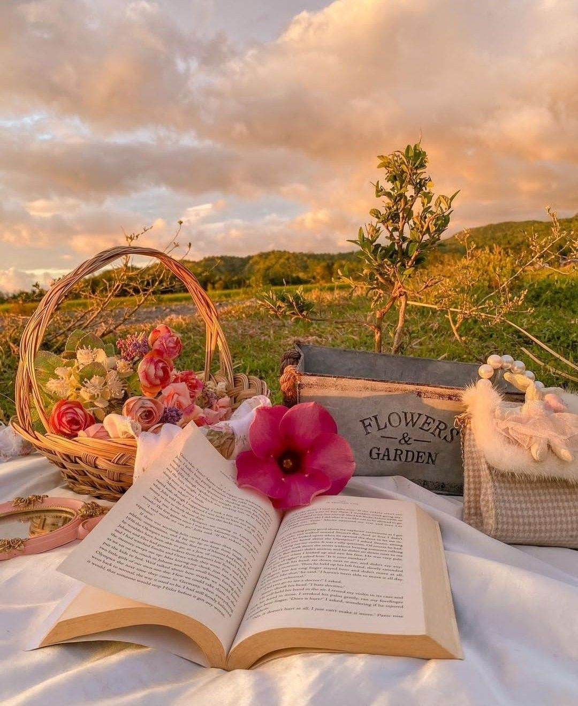
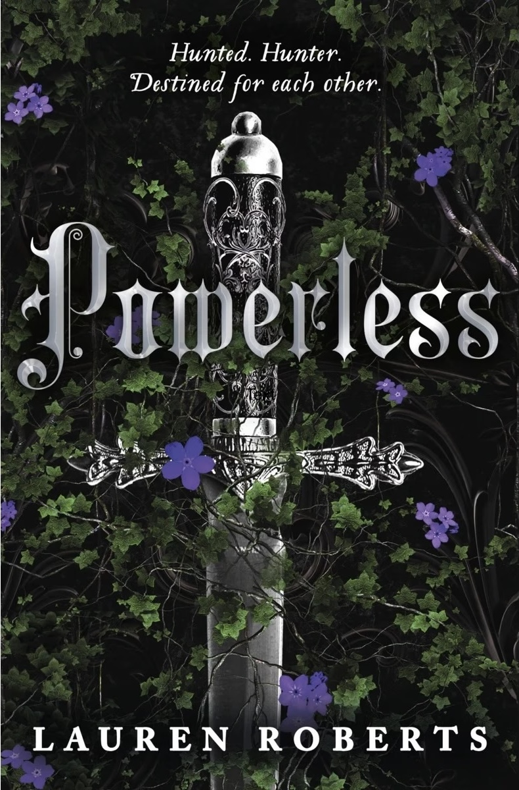
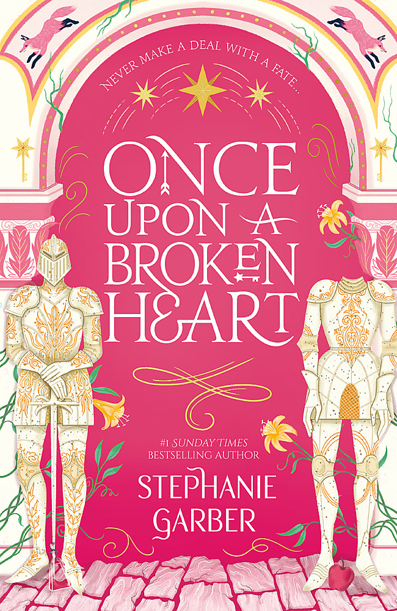
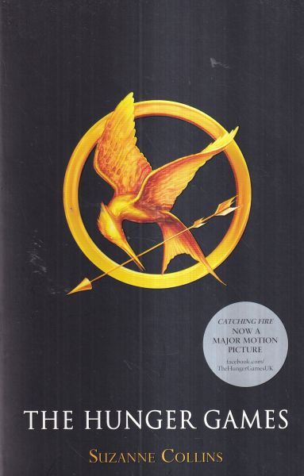
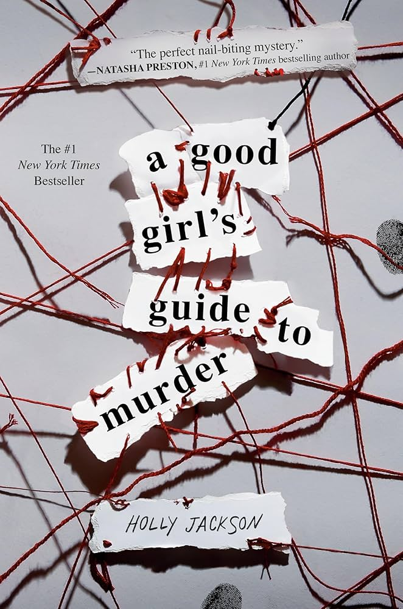
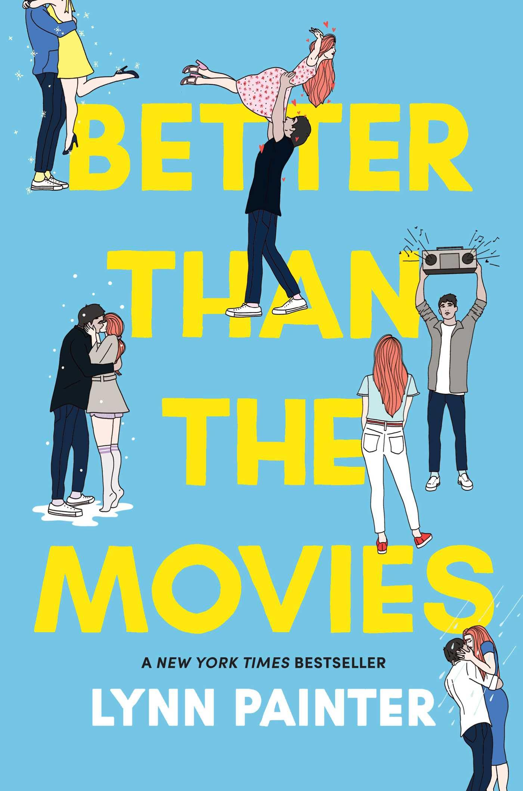
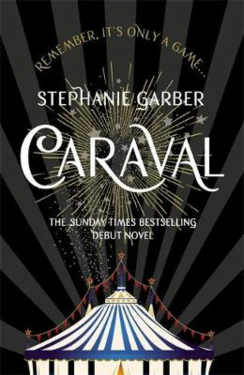

An avid reader with interests in a range of genres. Currently making my way through a mountain of books which keeps on growing!





Lynn Painter
★★★★★
What a cute YA novel. A nice escape. Where at the beginning of each chapter we are provided with a lovely quote from one of our favorite romcom movies that reminds of us how much we love romance.

Stephanie Garber
★★★★
One of my favorite parts of this book is the world! I would LOVE to attend Caraval. It's so magical and dark and mysterious. I also love that this book combines romance, fantasy, and mystery. I loved following all the clues along with Scarlett to try and find her sister. At no point did I know how this book was going to end. I need to read book two ASAP!